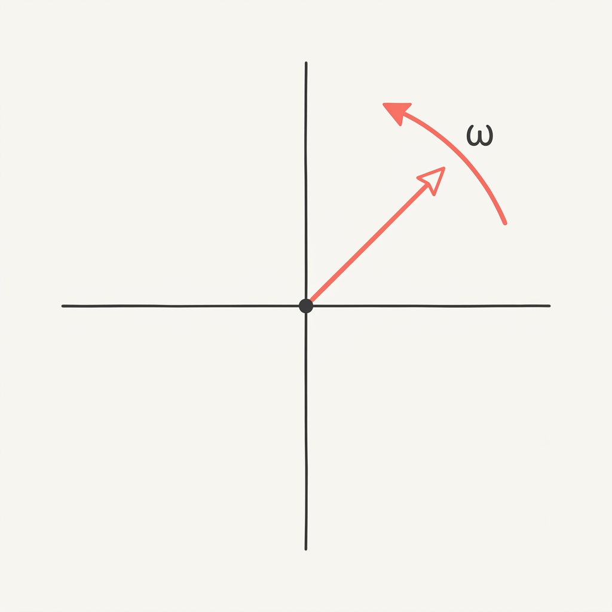

Fractional leadership
One to two days per week, three to twelve months. A senior operator embedded in your team, with the authority to make decisions, the scope to see them through, and the context to know when to push back.
Etymology: From Latin pulsare (to beat, to strike) + -ance (state or quality of). Mid-19th century term largely superseded by "angular velocity" in modern usage.
Most science organizations have the taste to know what to build. What they're missing is someone in the room who has done it before.
Early-stage biotechs know the science cold but often lack a seasoned product operator. Research organizations have deep domain expertise but limited experience shipping software at scale. Science philanthropies know the field they're funding but don't always have a technical operator to pressure-test the strategy.
The decisions these teams face (which AI capabilities to invest in, how to turn technology into a product, what a portfolio should add up to, which vendor or hire is actually worth the risk) need both scientific fluency and operator's instinct. That combination is rare on any team, and even rarer on the teams that need it most.
That's the gap we fill. We bring the operator's experience, the technical judgment, and the scientific context, and we apply them to whichever decision is in front of you this quarter.

If this sounds like your situation, or if you're not sure, write us. We read everything.
justin@pulsatance.aiFour ways we work. The right one depends on your needs.
One to two days per week, three to twelve months. A senior operator embedded in your team, with the authority to make decisions, the scope to see them through, and the context to know when to push back.
Fixed-scope, collaborative engagements, two to twelve weeks, built for rapid iteration and a defined deliverable: a program strategy, product validation, a technology assessment. Clear start, clear end, clear artifact.
Recurring and light-touch. Monthly standing time plus async input. For founders and leaders who need a thinking partner more often than they need a hire.
Half-day to multi-day engagements on AI adoption, technical strategy, or open-source practice. Designed for teams that want to build internal capability.
Not sure which shape fits? Tell us what's actually happening.
justin@pulsatance.ai